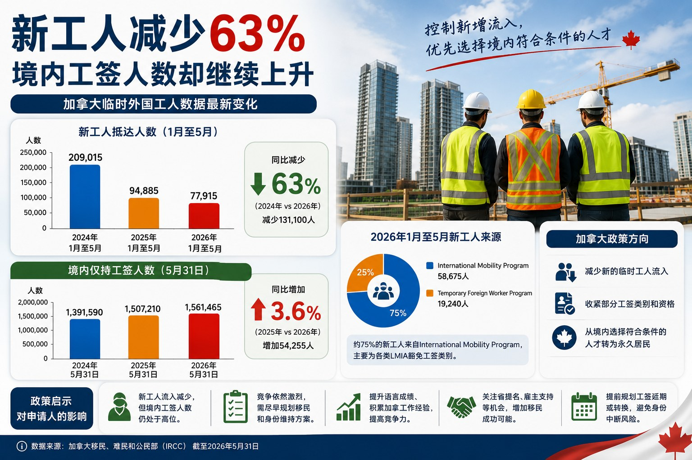

新工人减少63%，境内工签人数却继续上升
Read in English
加拿大移民部（IRCC）最新数据显示， 加拿大临时外国工人数量正在出现一个看似矛盾的变化： 新进入加拿大的工人明显减少， 但加拿大境内仅持有工作许可的人数却继续上升。
2026年1月至5月， IRCC统计的新工人抵达人数为77,915人。 相比2024年同期的209,015人， 减少131,100人，降幅约63%。
但是，截至2026年5月31日， 加拿大境内仅持有工作许可的人数达到1,561,465人， 比2025年同期增加54,255人， 增长约3.6%。
新进入加拿大的工人正在减少， 但已经在加拿大境内持有有效工作许可的人口总量仍在增加。
一、新工人抵达人数减少63%
| 时间 | 新工人抵达人数 |
|---|---|
| 2024年1月至5月 | 209,015 |
| 2025年1月至5月 | 94,885 |
| 2026年1月至5月 | 77,915 |
从2024年到2026年， 加拿大前五个月的新工人抵达人数减少了131,100人。
这反映出加拿大正在逐步减少新的临时外国工人流入， 并收紧部分工签类别及申请资格。
二、境内仅持工签人数却继续上升
| 日期 | 境内仅持工签人数 |
|---|---|
| 2024年5月31日 | 1,391,590 |
| 2025年5月31日 | 1,507,210 |
| 2026年5月31日 | 1,561,465 |
截至2026年5月31日， 加拿大境内仅持有工作许可的人数为1,561,465人。
与2025年同期相比， 增加了54,255人，增幅约3.6%。
这说明虽然新的工人抵达人数已经明显下降， 但加拿大境内现有的工签人口仍然处于高位。
三、为什么两组数据并不矛盾？
新工人抵达人数反映的是新进入加拿大工签系统的人数， 而境内仅持工签人数反映的是仍然持有有效工作许可的人口总量。
即使新进入加拿大的工人减少， 已经在加拿大的人仍可能：
- 延长现有工作许可；
- 从学习许可转为毕业工签；
- 转换到其他工作许可类别；
- 在等待永久居民申请期间继续持有有效工签。
因此，新增工人数量减少， 并不会立即导致加拿大境内工签人口下降。
“新工人抵达人数”属于流量数据， “境内工签持有人数”属于存量数据。 新增流量下降，并不代表现有存量会马上下降。
四、约75%的新工人来自LMIA豁免类别
2026年前五个月的新工人中， 约75%来自International Mobility Program， 而不是通常需要劳动力市场影响评估的 Temporary Foreign Worker Program。
这说明加拿大临时工人体系仍然高度依赖各种LMIA豁免工签。
International Mobility Program可能包括多种不需要LMIA的工作许可， 具体资格需要根据申请人的身份、工作类别、 国际协议、配偶身份或其他政策条件判断。
五、加拿大正在控制新的临时工人流入
加拿大已经实施或宣布多项与临时外国工人有关的调整， 包括：
- 减少部分低工资外国工人岗位；
- 收紧部分毕业工签资格；
- 收紧部分配偶开放工签资格；
- 继续控制新的临时居民及工人流入。
这些变化说明， 加拿大正在限制部分新的临时工人进入， 并加强对工签类别、申请资格和劳动力市场需求的审查。
六、境内申请人仍然是永久居民的重要来源
加拿大在减少新的临时居民流入的同时， 仍然会从已经在加拿大的人群中， 选择部分符合条件的申请人转为永久居民。
2026年1月至5月， 前临时居民占同期新永久居民人数的57%。
这说明加拿大目前的政策方向正在变得更加清晰：
减少新的临时居民流入， 同时从已经在加拿大、具备加拿大经验并符合条件的人群中， 选择部分申请人转为永久居民。
不过，已经在加拿大工作， 并不代表一定能够获得永久居民身份。
申请人仍然需要满足具体移民项目的语言、 工作经验、职业、雇主、省提名或综合排名要求。
七、新工人减少不等于竞争下降
对于目前的工签持有人来说， 新工人抵达人数下降， 并不意味着移民竞争会立即下降。
加拿大境内工签人口仍处于高位， 而永久居民配额仍然有限。
大量申请人可能同时竞争Express Entry、 省提名、雇主支持项目及其他永久居民通道。
因此，申请人不能仅仅因为新工人数量下降， 就认为未来获得永久居民身份会变得更容易。
我们的观察
加拿大目前正在采取一种双向调整方式： 一方面减少新的临时工人流入， 另一方面继续管理庞大的境内工签人口。
对工签持有人来说， 更重要的问题并不是新进入加拿大的人减少了多少， 而是自己是否符合现有永久居民项目的要求， 以及现有身份能否支持完成长期规划。
申请人应当尽早评估：
- 语言成绩是否具有竞争力；
- 加拿大工作经验是否符合移民项目要求；
- 职业类别是否具有省提名或联邦项目机会；
- 是否可以获得雇主支持；
- 工签是否能够延长或转换；
- 现有身份能否维持到永久居民申请完成。
工签和移民规划不应等到工作许可即将到期时才开始。 越早了解自己的分数、职业、项目选择和身份安排， 越有机会降低身份中断及错过申请机会的风险。
申请提示
本文旨在分享加拿大移民政策及申请实践中的观察与分析， 仅供一般信息参考，并不能替代针对个案的专业意见。
加拿大移民申请通常涉及申请人的教育背景、工作经历、 家庭情况、身份状态、雇主条件及申请时间等多项因素。 即使面对同一项政策， 不同申请人的申请策略和适用项目也可能不同。
如果您希望了解自己的情况是否适合某项移民或签证项目， 或希望在递交申请前获得更有针对性的建议， 欢迎与我们联系进行个人申请评估。
New Worker Arrivals Down 63%, Yet Canada’s Work Permit Population Continues to Rise
The latest statistics released by Immigration, Refugees and Citizenship Canada reveal an apparently contradictory trend: fewer new foreign workers are entering Canada, but the number of people already in Canada who hold only a work permit continues to increase.
Between January and May 2026, IRCC recorded 77,915 new worker arrivals.
Compared with 209,015 during the same period in 2024, this represents a decline of 131,100, or approximately 63%.
However, as of May 31, 2026, there were 1,561,465 people in Canada who held only a work permit.
This was 54,255 more than one year earlier, an increase of approximately 3.6%.
Fewer new foreign workers are entering Canada, but the population already holding valid work permits remains high and continues to grow.
New Worker Arrivals Have Declined by 63%
| Period | New Worker Arrivals |
|---|---|
| January to May 2024 | 209,015 |
| January to May 2025 | 94,885 |
| January to May 2026 | 77,915 |
Between 2024 and 2026, the number of new worker arrivals during the first five months of the year declined by 131,100.
This reflects Canada’s efforts to reduce new temporary worker inflows and tighten eligibility under certain work permit categories.
The Work Permit Population Continues to Rise
| Date | People Holding Only a Work Permit |
|---|---|
| May 31, 2024 | 1,391,590 |
| May 31, 2025 | 1,507,210 |
| May 31, 2026 | 1,561,465 |
As of May 31, 2026, there were 1,561,465 people in Canada who held only a valid work permit.
Compared with the same date in 2025, the total increased by 54,255, or approximately 3.6%.
Why Are the Two Trends Not Inconsistent?
New worker arrivals measure people newly entering the Canadian work permit system, while the total work permit population includes people who continue to hold valid permits in Canada.
Even when fewer new workers arrive, people already in Canada may:
- extend their existing work permits;
- transition from study permits to post-graduation work permits;
- change work permit categories; or
- continue holding valid work authorization while a permanent residence application is being processed.
As a result, a decline in new arrivals does not immediately reduce the overall work permit population.
New worker arrivals measure the flow of people entering the system, while the work permit population measures the total number of people remaining in the system.
Approximately 75% of New Workers Used LMIA-Exempt Programs
Approximately 75% of new workers recorded during the first five months of 2026 were admitted through the International Mobility Program, rather than the Temporary Foreign Worker Program.
This shows that Canada’s temporary worker system continues to rely heavily on LMIA-exempt work permits.
Canada Is Reducing New Temporary Worker Inflows
Canada has introduced measures affecting:
- certain low-wage foreign worker positions;
- post-graduation work permit eligibility;
- spousal open work permit eligibility; and
- the overall number of new temporary worker arrivals.
These measures demonstrate a broader policy direction toward controlling temporary resident growth and applying closer scrutiny to work permit eligibility.
Temporary Residents Remain an Important Source of Permanent Residents
At the same time, Canada continues to select permanent residents from among people who are already studying or working in the country.
Between January and May 2026, former temporary residents represented 57% of all new permanent residents admitted during that period.
Canada is reducing new temporary resident inflows while selecting some qualified applicants already in the country for permanent residence.
However, Canadian work experience alone does not guarantee permanent residence.
Applicants must still meet the language, work experience, occupation, employer, provincial nomination or ranking requirements of a specific immigration program.
Fewer New Workers Do Not Necessarily Mean Less Competition
For current work permit holders, fewer new arrivals do not necessarily mean that immigration competition will immediately decline.
The work permit population remains high, while permanent residence spaces are limited.
Many applicants may continue to compete through Express Entry, provincial nominee programs, employer-supported pathways and other permanent residence streams.
Our Observations
Canada is currently pursuing two related policy objectives: reducing new temporary worker inflows while managing a large population of existing work permit holders.
For current workers, the most important issue is not simply how many new workers are entering Canada.
Applicants should instead assess:
- their language results;
- their Canadian work experience;
- their occupation and immigration category;
- provincial nomination opportunities;
- employer support; and
- future work permit extension or transition options.
Work permit and permanent residence planning should begin well before a current permit is close to expiry.
Application Insights
Canadian immigration policies continue to evolve, and every applicant has a unique background, occupation, employment history, immigration status and family situation.
The same policy can create very different opportunities for different applicants.
Rather than relying solely on general statistics or individual experiences shared online, it is often more helpful to assess your own circumstances before deciding on an immigration strategy.
If you would like to determine whether you may qualify for a particular immigration or temporary resident program, we welcome you to contact us for a personalized assessment.